BarPlotis used to create a bar plot.SplitBarPlot(a.k.aWaterfallPlot) is used to create a bar plot with splitting the bars on the two sides.
Usage
BarPlot(
data,
x,
x_sep = "_",
y = NULL,
flip = FALSE,
fill_by_x_if_no_group = TRUE,
line_name = NULL,
label_nudge = 0.02,
label = NULL,
label_fg = "black",
label_size = 4,
label_bg = "white",
label_bg_r = 0.1,
group_by = NULL,
group_by_sep = "_",
group_name = NULL,
split_by = NULL,
split_by_sep = "_",
facet_by = NULL,
facet_scales = "fixed",
facet_ncol = NULL,
facet_nrow = NULL,
facet_byrow = TRUE,
facet_args = list(),
add_bg = FALSE,
bg_palette = "stripe",
bg_palcolor = NULL,
bg_alpha = 0.2,
add_line = NULL,
line_color = "red2",
line_width = 0.6,
line_type = 2,
add_trend = FALSE,
trend_color = "black",
trend_linewidth = 1,
trend_ptsize = 2,
theme = "theme_this",
theme_args = list(),
palette = "Paired",
palcolor = NULL,
alpha = 1,
x_text_angle = 0,
aspect.ratio = 1,
y_min = NULL,
y_max = NULL,
position = "auto",
position_dodge_preserve = "total",
legend.position = "right",
legend.direction = "vertical",
title = NULL,
subtitle = NULL,
xlab = NULL,
ylab = NULL,
keep_empty = FALSE,
expand = waiver(),
width = waiver(),
combine = TRUE,
nrow = NULL,
ncol = NULL,
byrow = TRUE,
seed = 8525,
axes = NULL,
axis_titles = axes,
guides = NULL,
design = NULL,
...
)
SplitBarPlot(
data,
x,
y,
y_sep = "_",
flip = FALSE,
split_by = NULL,
split_by_sep = "_",
alpha_by = NULL,
alpha_reverse = FALSE,
alpha_name = NULL,
order_y = list(`+` = c("x_desc", "alpha_desc"), `-` = c("x_desc", "alpha_asc")),
bar_height = 0.9,
lineheight = 0.5,
max_charwidth = 80,
fill_by = NULL,
fill_by_sep = "_",
fill_name = NULL,
direction_pos_name = "positive",
direction_neg_name = "negative",
theme = "theme_this",
theme_args = list(),
palette = "Spectral",
palcolor = NULL,
facet_by = NULL,
facet_scales = "free_y",
facet_nrow = NULL,
facet_ncol = NULL,
facet_byrow = TRUE,
aspect.ratio = 1,
x_min = NULL,
x_max = NULL,
legend.position = "right",
legend.direction = "vertical",
title = NULL,
subtitle = NULL,
xlab = NULL,
ylab = NULL,
keep_empty = FALSE,
combine = TRUE,
nrow = NULL,
ncol = NULL,
byrow = TRUE,
seed = 8525,
axes = NULL,
axis_titles = axes,
guides = NULL,
design = NULL,
...
)
WaterfallPlot(
data,
x,
y,
y_sep = "_",
flip = FALSE,
split_by = NULL,
split_by_sep = "_",
alpha_by = NULL,
alpha_reverse = FALSE,
alpha_name = NULL,
order_y = list(`+` = c("x_desc", "alpha_desc"), `-` = c("x_desc", "alpha_asc")),
bar_height = 0.9,
lineheight = 0.5,
max_charwidth = 80,
fill_by = NULL,
fill_by_sep = "_",
fill_name = NULL,
direction_pos_name = "positive",
direction_neg_name = "negative",
theme = "theme_this",
theme_args = list(),
palette = "Spectral",
palcolor = NULL,
facet_by = NULL,
facet_scales = "free_y",
facet_nrow = NULL,
facet_ncol = NULL,
facet_byrow = TRUE,
aspect.ratio = 1,
x_min = NULL,
x_max = NULL,
legend.position = "right",
legend.direction = "vertical",
title = NULL,
subtitle = NULL,
xlab = NULL,
ylab = NULL,
keep_empty = FALSE,
combine = TRUE,
nrow = NULL,
ncol = NULL,
byrow = TRUE,
seed = 8525,
axes = NULL,
axis_titles = axes,
guides = NULL,
design = NULL,
...
)Arguments
- data
A data frame.
- x
A character string specifying the column name of the data frame to plot for the x-axis.
- x_sep
A character string to concatenate the columns in
x, if multiple columns are provided.- y
A character string specifying the column name of the data frame to plot for the y-axis.
- flip
A logical value indicating whether to flip the x and y axes.
- fill_by_x_if_no_group
A logical value indicating whether to fill the bars by the x-axis values if there is no group_by.
- line_name
A character string indicating the name of the line.
- label_nudge
A numeric value to nudge the labels (the distance between the label and the top of the bar).
- label
A column name for the values to be displayed on the top of the bars. If TRUE, the y values will be displayed.
- label_fg
A character string indicating the color of the label.
- label_size
A numeric value indicating the size of the label.
- label_bg
A character string indicating the background color of the label.
- label_bg_r
A numeric value indicating the radius of the background.
- group_by
Columns to group the data for plotting For those plotting functions that do not support multiple groups, They will be concatenated into one column, using
group_by_sepas the separator- group_by_sep
The separator for multiple group_by columns. See
group_by- group_name
A character string to specify the name of the group_by in the legend.
- split_by
The column(s) to split data by and plot separately.
- split_by_sep
The separator for multiple split_by columns. See
split_by- facet_by
A character string specifying the column name of the data frame to facet the plot. Otherwise, the data will be split by
split_byand generate multiple plots and combine them into one usingpatchwork::wrap_plots- facet_scales
Whether to scale the axes of facets. Default is "fixed" Other options are "free", "free_x", "free_y". See
ggplot2::facet_wrap- facet_ncol
A numeric value specifying the number of columns in the facet. When facet_by is a single column and facet_wrap is used.
- facet_nrow
A numeric value specifying the number of rows in the facet. When facet_by is a single column and facet_wrap is used.
- facet_byrow
A logical value indicating whether to fill the plots by row. Default is TRUE.
- facet_args
A list of arguments to pass to ggplot2::facet_grid or ggplot2::facet_wrap.
- add_bg
A logical value indicating whether to add a background to the plot.
- bg_palette
A character string indicating the palette to use for the background.
- bg_palcolor
A character string indicating the color to use for the background.
- bg_alpha
A numeric value indicating the alpha of the background.
- add_line
A numeric value indicating the y value to add a horizontal line.
- line_color
A character string indicating the color of the line.
- line_width
A numeric value indicating the size of the line.
- line_type
A numeric value indicating the type of the line.
- add_trend
A logical value to add trend line to the plot.
- trend_color
A character string to specify the color of the trend line.
- trend_linewidth
A numeric value to specify the width of the trend line.
- trend_ptsize
A numeric value to specify the size of the trend line points.
- theme
A character string or a theme class (i.e. ggplot2::theme_classic) specifying the theme to use. Default is "theme_this".
- theme_args
A list of arguments to pass to the theme function.
- palette
A character string specifying the palette to use. A named list or vector can be used to specify the palettes for different
split_byvalues.- palcolor
A character string specifying the color to use in the palette. A named list can be used to specify the colors for different
split_byvalues. If some values are missing, the values from the palette will be used (palcolor will be NULL for those values).- alpha
A numeric value specifying the transparency of the plot.
- x_text_angle
A numeric value specifying the angle of the x-axis text.
- aspect.ratio
A numeric value specifying the aspect ratio of the plot.
- y_min
A numeric value to specify the minimum value of the y axis.
- y_max
A numeric value to specify the maximum value of the y axis.
- position
A character string indicating the position of the bars. If "auto", the position will be "stack" if group_by has more than 5 levels, otherwise "dodge". "fill" is also a valid option. Only works when group_by is not NULL.
- position_dodge_preserve
Should dodging preserve the "total" width of all elements at a position, or the width of a "single" element?
- legend.position
A character string specifying the position of the legend. if
waiver(), for single groups, the legend will be "none", otherwise "right".- legend.direction
A character string specifying the direction of the legend.
- title
A character string specifying the title of the plot. A function can be used to generate the title based on the default title. This is useful when split_by is used and the title needs to be dynamic.
- subtitle
A character string specifying the subtitle of the plot.
- xlab
A character string specifying the x-axis label.
- ylab
A character string specifying the y-axis label.
- keep_empty
A logical value indicating whether to keep empty groups. If FALSE, empty groups will be removed.
- expand
The values to expand the x and y axes. It is like CSS padding. When a single value is provided, it is used for both axes on both sides. When two values are provided, the first value is used for the top/bottom side and the second value is used for the left/right side. When three values are provided, the first value is used for the top side, the second value is used for the left/right side, and the third value is used for the bottom side. When four values are provided, the values are used for the top, right, bottom, and left sides, respectively. You can also use a named vector to specify the values for each side. When the axis is discrete, the values will be applied as 'add' to the 'expansion' function. When the axis is continuous, the values will be applied as 'mult' to the 'expansion' function. See also https://ggplot2.tidyverse.org/reference/expansion.html
- width
A numeric value specifying the width of the bars.
- combine
Whether to combine the plots into one when facet is FALSE. Default is TRUE.
- nrow
A numeric value specifying the number of rows in the facet.
- ncol
A numeric value specifying the number of columns in the facet.
- byrow
A logical value indicating whether to fill the plots by row.
- seed
The random seed to use. Default is 8525.
- axes
A string specifying how axes should be treated. Passed to
patchwork::wrap_plots(). Only relevant whensplit_byis used andcombineis TRUE. Options are:'keep' will retain all axes in individual plots.
'collect' will remove duplicated axes when placed in the same run of rows or columns of the layout.
'collect_x' and 'collect_y' will remove duplicated x-axes in the columns or duplicated y-axes in the rows respectively.
- axis_titles
A string specifying how axis titltes should be treated. Passed to
patchwork::wrap_plots(). Only relevant whensplit_byis used andcombineis TRUE. Options are:'keep' will retain all axis titles in individual plots.
'collect' will remove duplicated titles in one direction and merge titles in the opposite direction.
'collect_x' and 'collect_y' control this for x-axis titles and y-axis titles respectively.
- guides
A string specifying how guides should be treated in the layout. Passed to
patchwork::wrap_plots(). Only relevant whensplit_byis used andcombineis TRUE. Options are:'collect' will collect guides below to the given nesting level, removing duplicates.
'keep' will stop collection at this level and let guides be placed alongside their plot.
'auto' will allow guides to be collected if a upper level tries, but place them alongside the plot if not.
- design
Specification of the location of areas in the layout, passed to
patchwork::wrap_plots(). Only relevant whensplit_byis used andcombineis TRUE. When specified,nrow,ncol, andbyroware ignored. Seepatchwork::wrap_plots()for more details.- ...
Additional arguments.
- y_sep
A character string to concatenate the x columns if there are multiple.
- alpha_by
A character string indicating the column name to use for the transparency of the bars.
- alpha_reverse
A logical value indicating whether to reverse the transparency.
- alpha_name
A character string indicating the legend name of the transparency.
- order_y
A list of character strings indicating the order of the y axis. The keys are "+", "-", or "". However, "+/-" should not be mixed with "". The values are "x_asc", "x_desc", "alpha_asc", or "alpha_desc", indicating how to order the y axis. The default is
list("+" = c("x_desc", "alpha_desc"), "-" = c("x_desc", "alpha_asc")), meaning the positive values are ordered by the x-axis values in descending order and the alpha values in descending order, and the negative values are ordered by the x-axis values in descending order and the alpha values in ascending order. The "*" key is used to order the y axis without considering the direction.- bar_height
A numeric value indicating the height of the bars.
- lineheight
A numeric value indicating the height of the text.
- max_charwidth
A numeric value indicating the maximum width of the text.
- fill_by
A character string indicating the column name to use for the fill of the bars.
- fill_by_sep
A character string to concatenate the fill columns if there are multiple.
- fill_name
A character string indicating the legend name of the fill.
- direction_pos_name
A character string indicating the name of the positive direction.
- direction_neg_name
A character string indicating the name of the negative direction.
- x_min
A numeric value indicating the minimum value of the x axis.
- x_max
A numeric value indicating the maximum value of the x axis.
Examples
# \donttest{
data <- data.frame(
x = c("A", "B", "C", "D", "E", "F", "G", "H"),
y = c(10, 8, 16, 4, 6, 12, 14, 2),
group = c("G1", "G1", "G2", "G2", "G3", "G3", "G4", "G4"),
facet = c("F1", "F2", "F3", "F4", "F1", "F2", "F3", "F4")
)
BarPlot(data, x = "x", y = "y")
BarPlot(data, x = "x", y = "y", fill_by_x_if_no_group = FALSE)
 BarPlot(data, x = "x", y = "y", label = TRUE)
BarPlot(data, x = "x", y = "y", label = "facet", label_nudge = 0)
BarPlot(data, x = "group", y = "y", group_by = "x")
BarPlot(data,
x = "group", y = "y", group_by = "x",
position = "dodge", add_bg = TRUE
)
BarPlot(data,
x = "x", y = "y", split_by = "group",
facet_by = "facet", position = "dodge", facet_ncol = 1
)
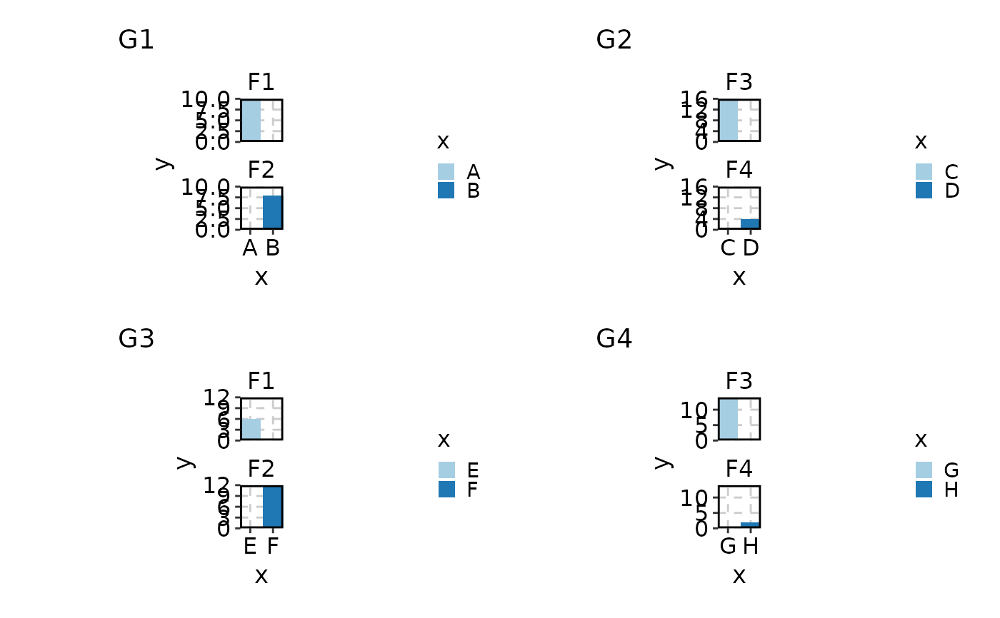
BarPlot(data,
x = "x", y = "y", split_by = "group", facet_by = "facet",
position = "dodge", facet_ncol = 1, guides = 'collect'
)
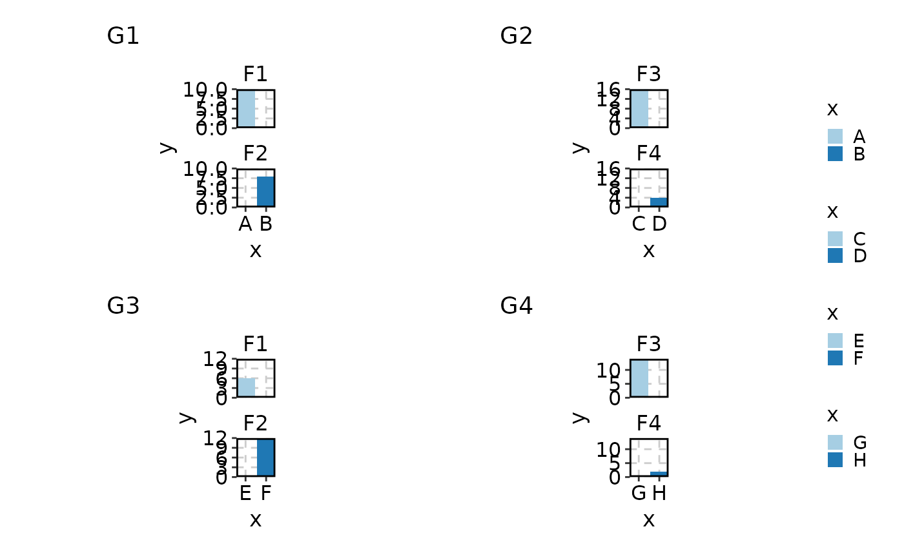
BarPlot(data,
x = "x", y = "y", split_by = "group",
palette = list(G1 = "Reds", G2 = "Blues", G3 = "Greens", G4 = "Purp"),
facet_by = "facet", position = "dodge", facet_ncol = 1
)
BarPlot(data,
x = "group", y = "y", group_by = "x",
position = "dodge", add_bg = TRUE, bg_palette = "Spectral"
)
# use the count
BarPlot(data, x = "group", ylab = "count")
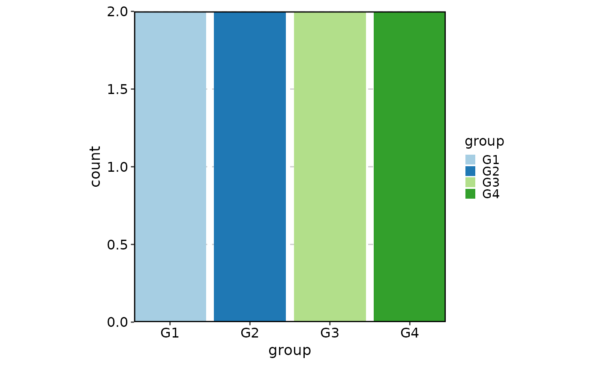
# flip the plot
BarPlot(data, x = "group", flip = TRUE, ylab = "count")
# }
data <- data.frame(
word = c("apple", "banana", "cherry", "date", "elderberry",
"It is a very long term with a lot of words"),
count = c(-10, 20, -30, 40, 50, 34),
score = c(1, 2, 3, 4, 5, 3.2),
group = c("A", "A", "B", "B", "C", "C")
)
SplitBarPlot(data, x = "count", y = "word", alpha_by = "score")
SplitBarPlot(data, x = "count", y = "word", alpha_by = "score",
max_charwidth = 30, lineheight = 1.1)
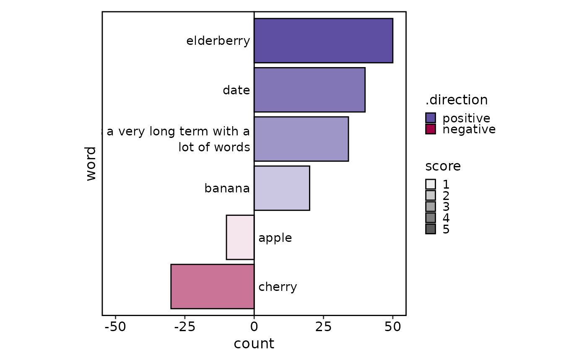
SplitBarPlot(data, x = "count", y = "word", fill_by = "group")
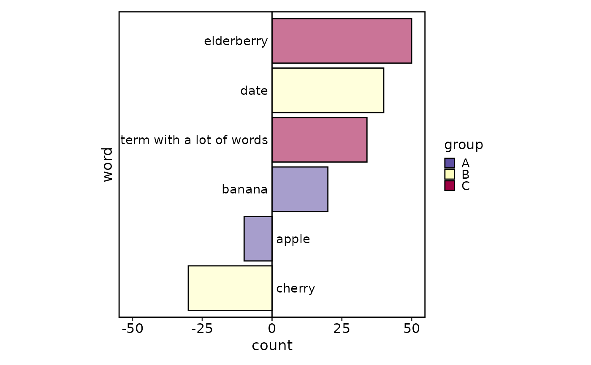
SplitBarPlot(data, x = "count", y = "word", facet_by = "group",
fill_name = "Direction")
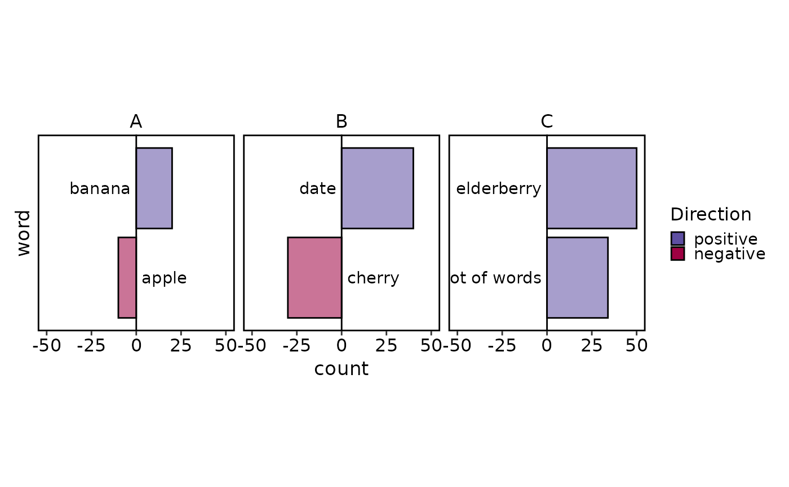
SplitBarPlot(data, x = "count", y = "word", alpha_by = "score", split_by="group",
palette = c(A = "Reds", B = "Blues", C = "Greens"))
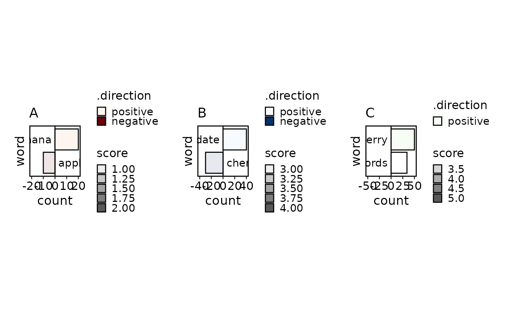
BarPlot(data, x = "x", y = "y", label = TRUE)
BarPlot(data, x = "x", y = "y", label = "facet", label_nudge = 0)
BarPlot(data, x = "group", y = "y", group_by = "x")
BarPlot(data,
x = "group", y = "y", group_by = "x",
position = "dodge", add_bg = TRUE
)
BarPlot(data,
x = "x", y = "y", split_by = "group",
facet_by = "facet", position = "dodge", facet_ncol = 1
)
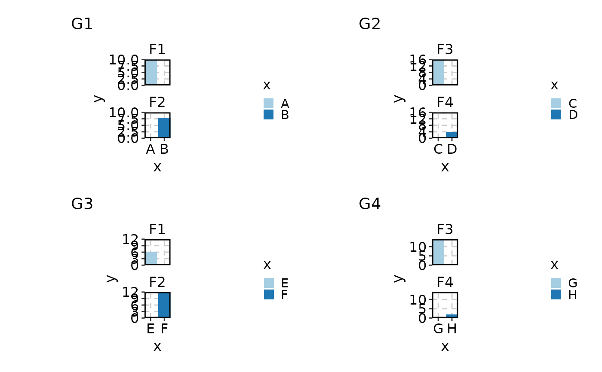
BarPlot(data,
x = "x", y = "y", split_by = "group", facet_by = "facet",
position = "dodge", facet_ncol = 1, guides = 'collect'
)
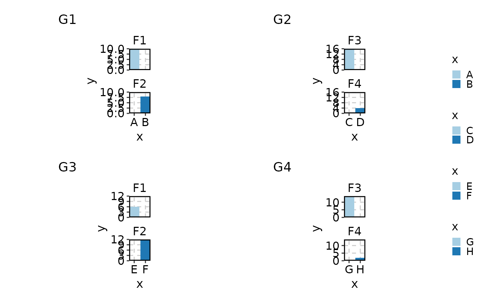
BarPlot(data,
x = "x", y = "y", split_by = "group",
palette = list(G1 = "Reds", G2 = "Blues", G3 = "Greens", G4 = "Purp"),
facet_by = "facet", position = "dodge", facet_ncol = 1
)
BarPlot(data,
x = "group", y = "y", group_by = "x",
position = "dodge", add_bg = TRUE, bg_palette = "Spectral"
)
# use the count
BarPlot(data, x = "group", ylab = "count")
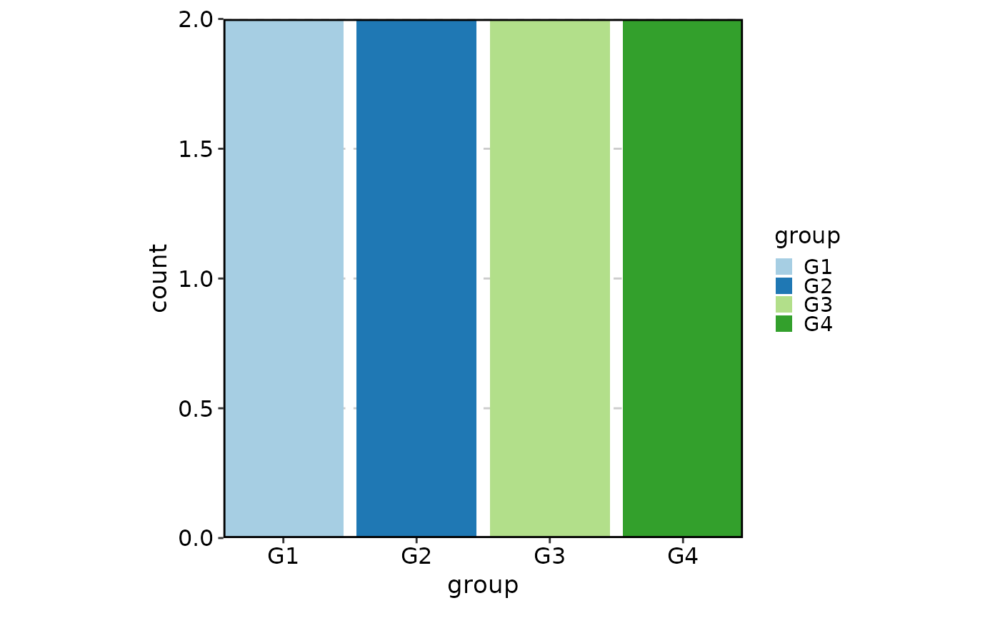
# flip the plot
BarPlot(data, x = "group", flip = TRUE, ylab = "count")
# }
data <- data.frame(
word = c("apple", "banana", "cherry", "date", "elderberry",
"It is a very long term with a lot of words"),
count = c(-10, 20, -30, 40, 50, 34),
score = c(1, 2, 3, 4, 5, 3.2),
group = c("A", "A", "B", "B", "C", "C")
)
SplitBarPlot(data, x = "count", y = "word", alpha_by = "score")
SplitBarPlot(data, x = "count", y = "word", alpha_by = "score",
max_charwidth = 30, lineheight = 1.1)
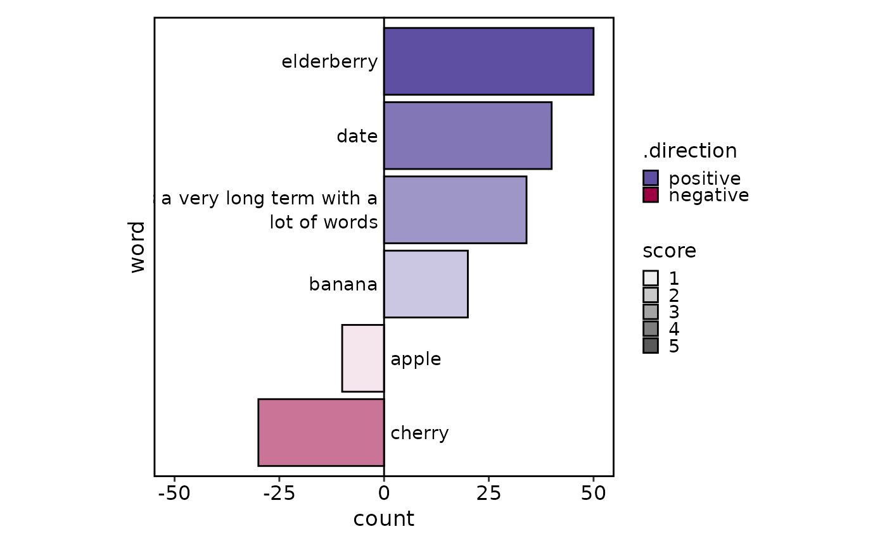
SplitBarPlot(data, x = "count", y = "word", fill_by = "group")
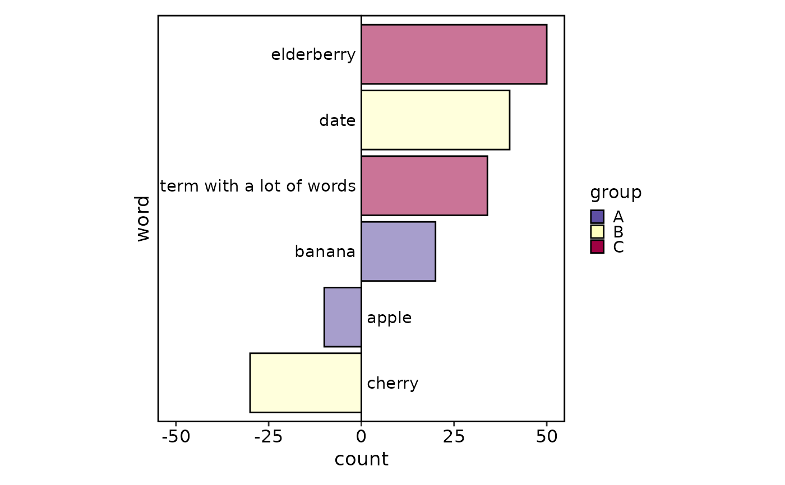
SplitBarPlot(data, x = "count", y = "word", facet_by = "group",
fill_name = "Direction")
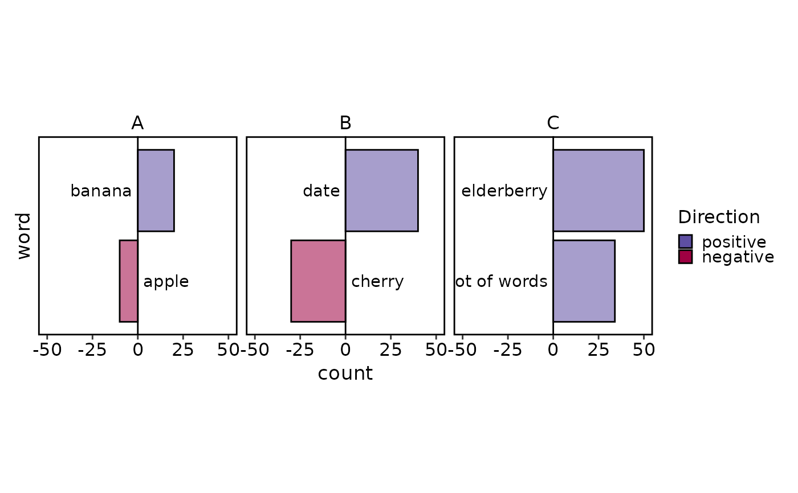
SplitBarPlot(data, x = "count", y = "word", alpha_by = "score", split_by="group",
palette = c(A = "Reds", B = "Blues", C = "Greens"))
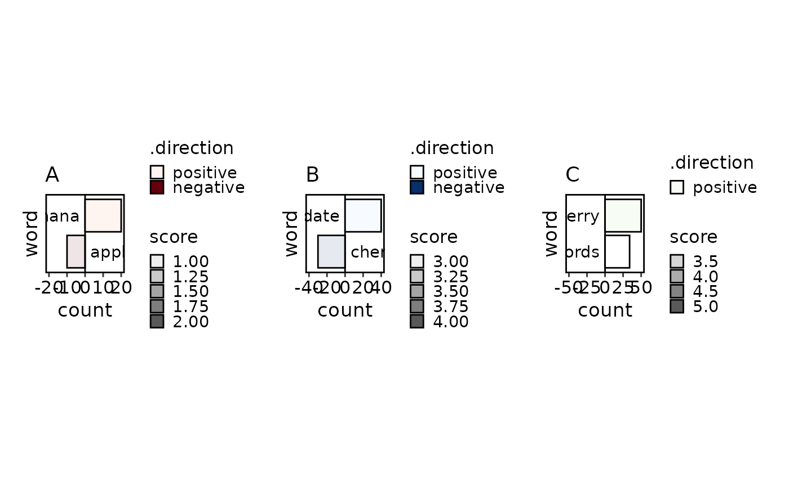